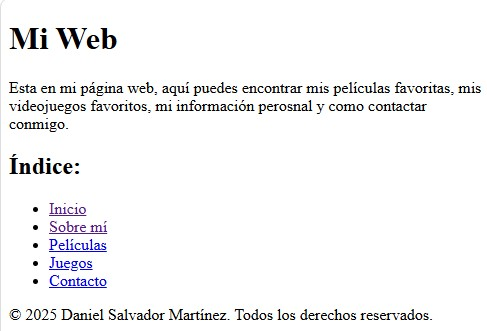
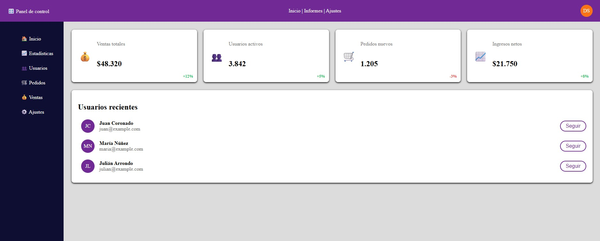
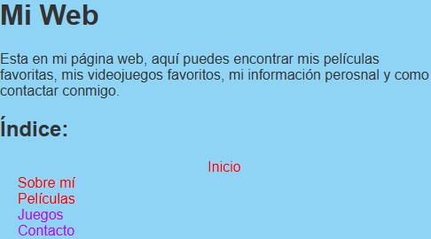
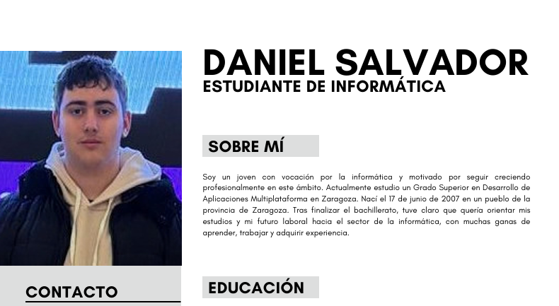

Proyecto 1
Este fue el primer proyecto real que hice de HTML, consistía en poner un poco sobre mí y mis gustos. Es básico ya que solo usa HTML.

En constante aprendizaje para poder encontrar el mejor trabajo posible.
Me llamo Daniel Salvador Martínez y tengo 19 años. Nací el 17 de junio de 2007 en Tauste, un pequeño pueblo de Zaragoza.
En junio de 2025 terminé el Bachillerato de Ciencias y Tecnología en el IES Río Arba. Actualmente estudio el Grado Superior de Desarrollo de Aplicaciones Multiplataforma (DAM) en ThePowerFP.
Mi objetivo es completar DAM y después cursar DAW para especializarme en el desarrollo web full stack.
Este fue el primer proyecto real que hice de HTML, consistía en poner un poco sobre mí y mis gustos. Es básico ya que solo usa HTML.

Un pequeño trabajo que nos mandó nuestra profesora y lo hice a mi estilo.
Un pequeño proyecto de clase para hacer con Flex y Grid y, además, introducir un poco de JS.

Es como el proyecto 1 pero con un par de estilos css que nos dijo de usar nuestra profesora.

Aquí os podéis encontrar mi currículum.
